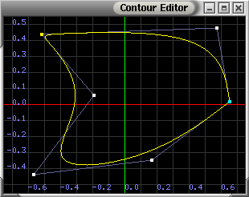

Contour Editor Utility
Quick contents
Overview
Cuspy is a utility for editing spline contours in 2D space. A B-Spline is
used to determine the curve. The curve may be either an open or closed one.
Cuspy
The program is invoked as:
cuspy (filename)
A window is displayed as in Figure 1, showing
the contour, its control points. If the filename arguemnt specifies a
a valid contour file, the file will be loaded. Otherwise, a default contour of
four control points forming a closed circle about the origin.

Figure 1 - A cuspy screen
Manipulating the contour
- Moving control points - The shape of the contour is manipulated by moving
control points about by dragging them with the left mouse button.
- Adding control points - Control points can be added by clicking the middle
mouse button at the desired placement location. Clicking the left and right buttons
together can also be used.
- Deleting control points - A control point can be deleted by clicking on it
with the middle mouse button. Clicking the left and right buttons together can also
be used. Neither the first nor last control point of the contour can be deleted.
Also, the contour si constrained to have a minimum of four control points at any given
time.
- Altering Multiplicity - The multiplicity of a control point can be increased
by double clicking on it. A point may have a maximum multiplicity of three, so double
clicking a point with multiplicity of three will reset it to multiplicity of one. The
colour of a control point will change to reflect the multiplicity change.
Manipulating the View
- Zooming - Zooming the view is done by dragging the view with the left mouse
button while holding either the Alt or Ctrl button.
- Panning - Panning the view is done by dragging the view with the left mouse
button while holding the Shift button.
The popup menu
The cuspy popup menu is controlled using the right mouse button.
The menu contains the following items:
- Save - Save the contour to file specified when the program was invioked.
If there was no filename specified, the user will be prompt for one.
- Save as ... - Prompts the user for a filename and saves the funtion to that
file.
- Revert to saved - This will reload the contour from file. Any changes since the last save will be lost when this is done.
- Closed - Flags whether the contour should be open or closed.
- View points - Toggles whether the control points are visible. This is
on by default.
- View segments - Toggles whether the line segments connecting control points
are visible. This is off by default.
- View curve - Toggles whether the contour curve visible. This is
on by default.
- View axes - Toggles whether the spatial axes are visible.
This is on by default.
- Quick help - Opens the Help dialog. A short in program reference that a lists the program's mouse commands.
- About - Information about implementation and documentation author, Colin Smith.
- Edit name ... - Edits the name of the contour to be saved within the contour file (.con).
- Refresh mode - Sets the mode for which edits within cuspy are propagated back to the file that was read.
- Explicit - Changes are only saved back to the file when explicitly saved (i.e. using the Save/Save as .. popup menu features).
- Triggered - Changes are propagated back to the file when a mouse release event is detected (i.e. after releasing the left mouse button).
- Continuous - Changes are propagated back to the file as control points are being manipulated. This works best with the accompanying text editor vlabTextEditor.
- Exit - Exits the utility. If there was any changes since the last save, the
user will be prompted to save.
Using with the vlabTextEditor
cuspy works well with the accompanying text editor vlabTextEditor. When cuspy is in continuous mode, and the vlabTextEditor is concurrently open with the same contour file (.con), the text values within the vlabTextEditor changes as control points are moved within cuspy. Many other text editors may need to be refreshed before the changes are visible.
Configuration
The colours used in cuspy can be configured be editing the configuration file in VLAB.
The configuration file is shared with that of the function editor, funcedit.
In the VLAB conguration directory (VLABCONFIGDIR), there is a file called 'funcedit' that
may contain a line entry for each configurable colour. Each entry needs three values for
red, green and blue colour components, scaled from 0.0 to 1.0.
Allowed configuration entries
- background
- points
- segments
- curve
- grid
- xaxis
- yaxis
- labels
An example entry would then be background: 0.0 0.0 0.0 which would give a black
background.
Contour File Format
The contour file format consists of:
- cver # # - Cuspy and contour version numbers.
- name: name - Internal name of contour file.
- points: # # - Number of unique control points, followed by total number of points with multiplicity.
- type: type - Closed or open curve.
- x y z m - Control point entery, x-position, y-position, z-position and m multiplicity of control point.
Example contour file:
cver 1 1
name: curve_name
points: 5 6
type: closed
0.40 0.40 0.0 2
0.54 0.02 0.0 1
0.40 -0.40 0.0 1
-0.40 -0.40 0.0 1
-0.40 0.40 0.0 1
Known Issues
cuspy has several known issues that are currently being addressed:
- The z-positions of the curve (as read in from the .con contour file) are considered in the calculation of picking control points. Meaning, if z-positions are on vastly different levels, the picking of control points may not work as desired.
- The quick keys (e.g. Ctrl+S) are inaffective.
Credits
Colin Smith - cuspy - implementation and documentation
Andrew Owens - cuspy - documentation
Last updated January 27, 2017 by Andrew Owens